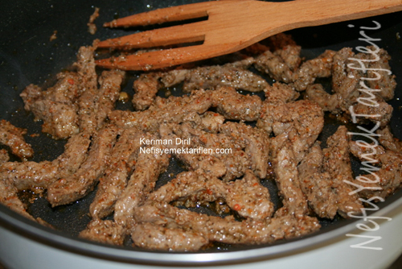

Etlerimizi ince jülyen kesiyoruz.Tüm malzemeyi derin bir kaba alıp ,etlerimizle harmanlıyoruz.En az 2 saat buzdolabında bekletiyoruz.
Marinelenmiş etlerimizi,yayvan ve derin bir teflona alıp,1 çay bardağı sıcak su ekleyip,yüksek ateşte hızlı pişiriyoruz.Etlerimiz pişmeye yakın tuzunu ayarlıyoruz.
Etlerimiz pişerken patateslerimizi kibrit çöpünden kalın doğruyoruz.Kızartıyoruz.

Servis için,patateslerimizi porsiyonluk tabağa alıyoruz.Etimizi ortaya ekliyoruz.Süzme yoğurdu etrafına gezdiriyoruz.Kızdırdığımız yağ ve pul biberi yemeğimizin üzerine gezdirip,sıcak servis yapıyoruz.